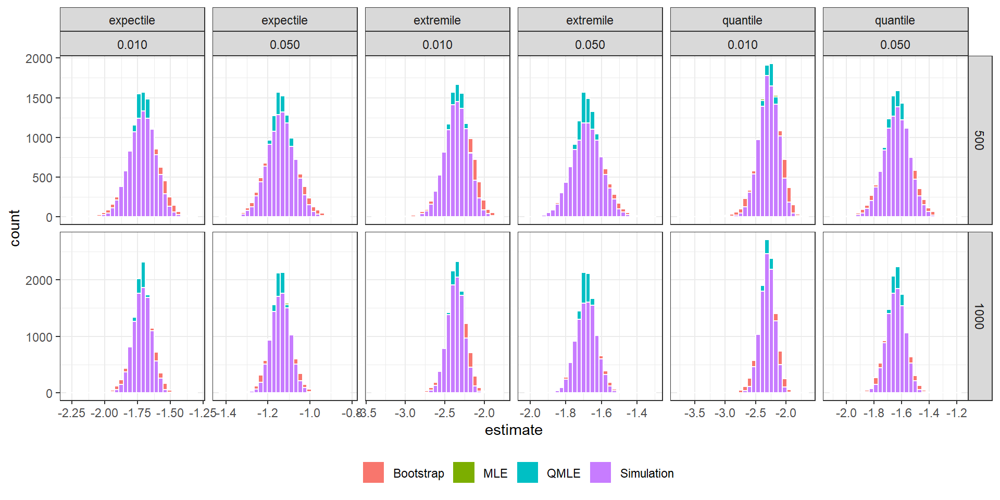
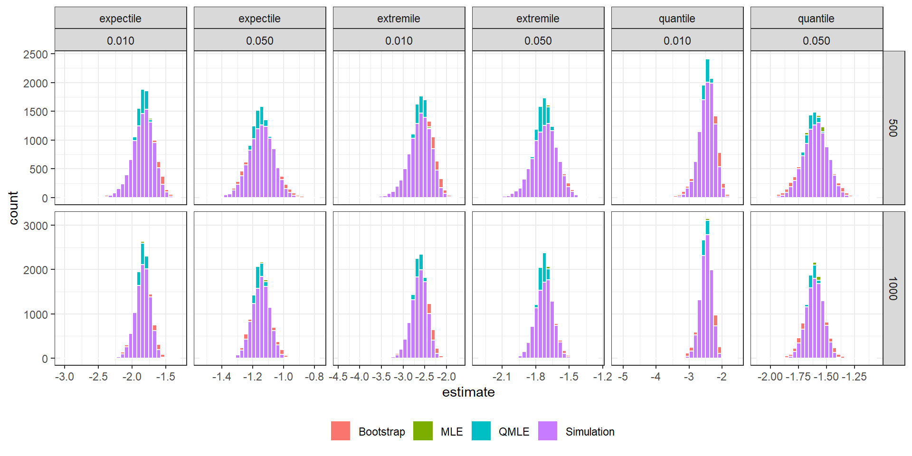
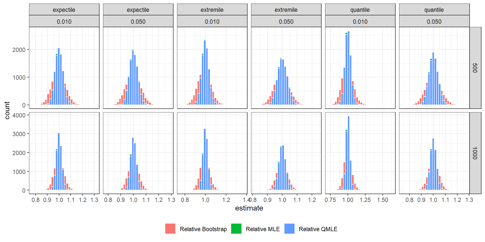
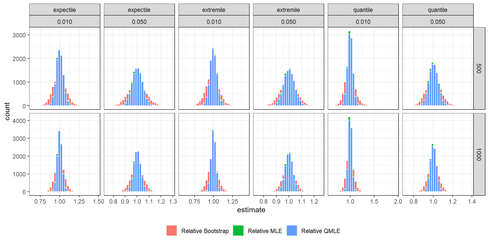
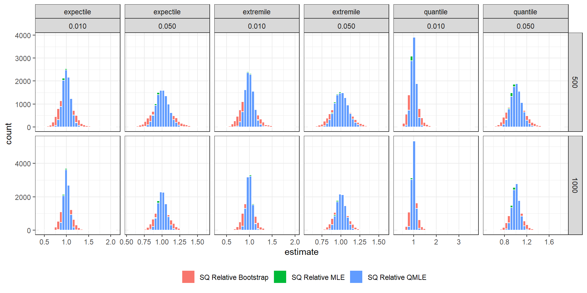

Simulation Results
GARCH-based Asymmetric Least Squares Risk Measures
Simulation Results: High persistence






| data | simulation | distribution | method | size | measure | level | min | percent_25 | median | percent_75 | max | average | sd | skew | kurt |
|---|---|---|---|---|---|---|---|---|---|---|---|---|---|---|---|
| Heteroskedastic | High persistence | Gaussian | Bootstrap | 500 | expectile | 0.010 | -2.289 | -1.781 | -1.704 | -1.628 | -1.318 | -1.707 | 0.115 | -0.208 | 3.182 |
| Heteroskedastic | High persistence | Gaussian | Bootstrap | 500 | expectile | 0.050 | -1.420 | -1.188 | -1.137 | -1.087 | -0.813 | -1.136 | 0.075 | 0.094 | 3.093 |
| Heteroskedastic | High persistence | Gaussian | Bootstrap | 500 | extremile | 0.010 | -3.389 | -2.436 | -2.318 | -2.202 | -1.773 | -2.325 | 0.175 | -0.354 | 3.397 |
| Heteroskedastic | High persistence | Gaussian | Bootstrap | 500 | extremile | 0.050 | -1.992 | -1.734 | -1.675 | -1.615 | -1.308 | -1.674 | 0.088 | 0.063 | 3.034 |
| Heteroskedastic | High persistence | Gaussian | Bootstrap | 500 | quantile | 0.010 | -3.791 | -2.399 | -2.262 | -2.141 | -1.695 | -2.278 | 0.197 | -0.498 | 3.743 |
| Heteroskedastic | High persistence | Gaussian | Bootstrap | 500 | quantile | 0.050 | -2.103 | -1.703 | -1.631 | -1.561 | -1.178 | -1.633 | 0.107 | -0.119 | 3.192 |
| Heteroskedastic | High persistence | Gaussian | Bootstrap | 1000 | expectile | 0.010 | -2.045 | -1.767 | -1.713 | -1.659 | -1.380 | -1.715 | 0.081 | -0.152 | 3.143 |
| Heteroskedastic | High persistence | Gaussian | Bootstrap | 1000 | expectile | 0.050 | -1.337 | -1.175 | -1.140 | -1.105 | -0.898 | -1.139 | 0.052 | 0.057 | 3.039 |
| Heteroskedastic | High persistence | Gaussian | Bootstrap | 1000 | extremile | 0.010 | -2.881 | -2.432 | -2.348 | -2.263 | -1.926 | -2.352 | 0.126 | -0.258 | 3.200 |
| Heteroskedastic | High persistence | Gaussian | Bootstrap | 1000 | extremile | 0.050 | -1.923 | -1.723 | -1.682 | -1.642 | -1.392 | -1.682 | 0.061 | 0.040 | 3.044 |
| Heteroskedastic | High persistence | Gaussian | Bootstrap | 1000 | quantile | 0.010 | -3.040 | -2.397 | -2.296 | -2.207 | -1.835 | -2.306 | 0.144 | -0.369 | 3.353 |
| Heteroskedastic | High persistence | Gaussian | Bootstrap | 1000 | quantile | 0.050 | -1.960 | -1.691 | -1.640 | -1.589 | -1.326 | -1.640 | 0.076 | -0.056 | 3.087 |
| Heteroskedastic | High persistence | Gaussian | MLE | 500 | expectile | 0.010 | -2.015 | -1.768 | -1.713 | -1.657 | -1.408 | -1.713 | 0.083 | -0.094 | 2.980 |
| Heteroskedastic | High persistence | Gaussian | MLE | 500 | expectile | 0.050 | -1.346 | -1.175 | -1.139 | -1.102 | -0.904 | -1.138 | 0.053 | 0.058 | 2.939 |
| Heteroskedastic | High persistence | Gaussian | MLE | 500 | extremile | 0.010 | -2.974 | -2.434 | -2.344 | -2.257 | -1.899 | -2.348 | 0.131 | -0.171 | 3.057 |
| Heteroskedastic | High persistence | Gaussian | MLE | 500 | extremile | 0.050 | -1.901 | -1.723 | -1.682 | -1.637 | -1.425 | -1.680 | 0.063 | 0.051 | 2.939 |
| Heteroskedastic | High persistence | Gaussian | MLE | 500 | quantile | 0.010 | -2.999 | -2.381 | -2.281 | -2.186 | -1.825 | -2.286 | 0.146 | -0.273 | 3.176 |
| Heteroskedastic | High persistence | Gaussian | MLE | 500 | quantile | 0.050 | -1.941 | -1.688 | -1.634 | -1.582 | -1.317 | -1.635 | 0.079 | -0.065 | 3.024 |
| Heteroskedastic | High persistence | Gaussian | MLE | 1000 | expectile | 0.010 | -1.934 | -1.754 | -1.715 | -1.676 | -1.496 | -1.716 | 0.059 | -0.074 | 3.064 |
| Heteroskedastic | High persistence | Gaussian | MLE | 1000 | expectile | 0.050 | -1.275 | -1.164 | -1.139 | -1.114 | -0.992 | -1.139 | 0.037 | 0.037 | 3.004 |
| Heteroskedastic | High persistence | Gaussian | MLE | 1000 | extremile | 0.010 | -2.763 | -2.423 | -2.359 | -2.297 | -1.990 | -2.361 | 0.094 | -0.130 | 3.136 |
| Heteroskedastic | High persistence | Gaussian | MLE | 1000 | extremile | 0.050 | -1.838 | -1.713 | -1.684 | -1.653 | -1.500 | -1.683 | 0.044 | 0.038 | 3.044 |
| Heteroskedastic | High persistence | Gaussian | MLE | 1000 | quantile | 0.010 | -2.771 | -2.375 | -2.302 | -2.234 | -1.934 | -2.306 | 0.106 | -0.229 | 3.135 |
| Heteroskedastic | High persistence | Gaussian | MLE | 1000 | quantile | 0.050 | -1.853 | -1.677 | -1.638 | -1.601 | -1.418 | -1.639 | 0.056 | -0.052 | 3.047 |
| Heteroskedastic | High persistence | Gaussian | QMLE | 500 | expectile | 0.010 | -2.009 | -1.769 | -1.713 | -1.658 | -1.410 | -1.713 | 0.083 | -0.085 | 2.983 |
| Heteroskedastic | High persistence | Gaussian | QMLE | 500 | expectile | 0.050 | -1.347 | -1.175 | -1.140 | -1.103 | -0.904 | -1.139 | 0.053 | 0.060 | 2.952 |
| Heteroskedastic | High persistence | Gaussian | QMLE | 500 | extremile | 0.010 | -2.983 | -2.432 | -2.344 | -2.257 | -1.901 | -2.347 | 0.130 | -0.154 | 3.057 |
| Heteroskedastic | High persistence | Gaussian | QMLE | 500 | extremile | 0.050 | -1.904 | -1.723 | -1.682 | -1.638 | -1.426 | -1.681 | 0.063 | 0.058 | 2.954 |
| Heteroskedastic | High persistence | Gaussian | QMLE | 500 | quantile | 0.010 | -3.016 | -2.380 | -2.281 | -2.187 | -1.829 | -2.286 | 0.145 | -0.268 | 3.160 |
| Heteroskedastic | High persistence | Gaussian | QMLE | 500 | quantile | 0.050 | -1.943 | -1.689 | -1.635 | -1.582 | -1.321 | -1.636 | 0.079 | -0.061 | 3.027 |
| Heteroskedastic | High persistence | Gaussian | QMLE | 1000 | expectile | 0.010 | -1.934 | -1.754 | -1.715 | -1.677 | -1.497 | -1.716 | 0.058 | -0.070 | 3.062 |
| Heteroskedastic | High persistence | Gaussian | QMLE | 1000 | expectile | 0.050 | -1.275 | -1.165 | -1.140 | -1.114 | -0.991 | -1.139 | 0.037 | 0.036 | 3.001 |
| Heteroskedastic | High persistence | Gaussian | QMLE | 1000 | extremile | 0.010 | -2.781 | -2.423 | -2.359 | -2.298 | -1.993 | -2.361 | 0.093 | -0.123 | 3.142 |
| Heteroskedastic | High persistence | Gaussian | QMLE | 1000 | extremile | 0.050 | -1.838 | -1.713 | -1.684 | -1.654 | -1.498 | -1.684 | 0.044 | 0.041 | 3.040 |
| Heteroskedastic | High persistence | Gaussian | QMLE | 1000 | quantile | 0.010 | -2.705 | -2.376 | -2.303 | -2.235 | -1.938 | -2.307 | 0.105 | -0.224 | 3.115 |
| Heteroskedastic | High persistence | Gaussian | QMLE | 1000 | quantile | 0.050 | -1.856 | -1.677 | -1.638 | -1.602 | -1.418 | -1.640 | 0.056 | -0.050 | 3.041 |
| Heteroskedastic | High persistence | Gaussian | Relative Bootstrap | 500 | expectile | 0.010 | 0.772 | 0.958 | 0.995 | 1.034 | 1.298 | 0.996 | 0.058 | 0.168 | 3.361 |
| Heteroskedastic | High persistence | Gaussian | Relative Bootstrap | 500 | expectile | 0.050 | 0.788 | 0.960 | 0.999 | 1.037 | 1.277 | 0.999 | 0.057 | 0.039 | 3.093 |
| Heteroskedastic | High persistence | Gaussian | Relative Bootstrap | 500 | extremile | 0.010 | 0.756 | 0.948 | 0.989 | 1.030 | 1.356 | 0.990 | 0.063 | 0.189 | 3.584 |
| Heteroskedastic | High persistence | Gaussian | Relative Bootstrap | 500 | extremile | 0.050 | 0.819 | 0.964 | 0.996 | 1.029 | 1.235 | 0.997 | 0.049 | 0.078 | 3.112 |
| Heteroskedastic | High persistence | Gaussian | Relative Bootstrap | 500 | quantile | 0.010 | 0.723 | 0.946 | 0.994 | 1.044 | 1.610 | 0.997 | 0.079 | 0.499 | 4.726 |
| Heteroskedastic | High persistence | Gaussian | Relative Bootstrap | 500 | quantile | 0.050 | 0.754 | 0.959 | 0.999 | 1.038 | 1.271 | 1.000 | 0.061 | 0.113 | 3.330 |
| Heteroskedastic | High persistence | Gaussian | Relative Bootstrap | 1000 | expectile | 0.010 | 0.863 | 0.972 | 0.998 | 1.026 | 1.173 | 0.999 | 0.041 | 0.164 | 3.242 |
| Heteroskedastic | High persistence | Gaussian | Relative Bootstrap | 1000 | expectile | 0.050 | 0.866 | 0.974 | 1.000 | 1.027 | 1.162 | 1.001 | 0.040 | 0.073 | 3.083 |
| Heteroskedastic | High persistence | Gaussian | Relative Bootstrap | 1000 | extremile | 0.010 | 0.837 | 0.966 | 0.995 | 1.024 | 1.211 | 0.996 | 0.044 | 0.169 | 3.461 |
| Heteroskedastic | High persistence | Gaussian | Relative Bootstrap | 1000 | extremile | 0.050 | 0.881 | 0.976 | 0.999 | 1.022 | 1.134 | 0.999 | 0.034 | 0.095 | 3.112 |
| Heteroskedastic | High persistence | Gaussian | Relative Bootstrap | 1000 | quantile | 0.010 | 0.779 | 0.964 | 0.998 | 1.033 | 1.417 | 1.000 | 0.056 | 0.369 | 4.298 |
| Heteroskedastic | High persistence | Gaussian | Relative Bootstrap | 1000 | quantile | 0.050 | 0.836 | 0.973 | 1.000 | 1.028 | 1.201 | 1.001 | 0.043 | 0.127 | 3.260 |
| Heteroskedastic | High persistence | Gaussian | Relative MLE | 500 | expectile | 0.010 | 0.863 | 0.976 | 0.999 | 1.022 | 1.151 | 1.000 | 0.035 | 0.228 | 3.223 |
| Heteroskedastic | High persistence | Gaussian | Relative MLE | 500 | expectile | 0.050 | 0.878 | 0.978 | 1.000 | 1.023 | 1.141 | 1.001 | 0.033 | 0.174 | 3.032 |
| Heteroskedastic | High persistence | Gaussian | Relative MLE | 500 | extremile | 0.010 | 0.852 | 0.975 | 0.998 | 1.023 | 1.230 | 1.000 | 0.037 | 0.402 | 4.133 |
| Heteroskedastic | High persistence | Gaussian | Relative MLE | 500 | extremile | 0.050 | 0.873 | 0.977 | 0.999 | 1.023 | 1.143 | 1.001 | 0.033 | 0.194 | 3.072 |
| Heteroskedastic | High persistence | Gaussian | Relative MLE | 500 | quantile | 0.010 | 0.807 | 0.972 | 0.999 | 1.029 | 1.405 | 1.001 | 0.045 | 0.241 | 4.322 |
| Heteroskedastic | High persistence | Gaussian | Relative MLE | 500 | quantile | 0.050 | 0.844 | 0.976 | 1.001 | 1.026 | 1.150 | 1.001 | 0.038 | 0.100 | 3.107 |
| Heteroskedastic | High persistence | Gaussian | Relative MLE | 1000 | expectile | 0.010 | 0.927 | 0.984 | 0.999 | 1.015 | 1.110 | 1.000 | 0.023 | 0.182 | 3.158 |
| Heteroskedastic | High persistence | Gaussian | Relative MLE | 1000 | expectile | 0.050 | 0.923 | 0.984 | 1.000 | 1.015 | 1.097 | 1.000 | 0.023 | 0.123 | 3.072 |
| Heteroskedastic | High persistence | Gaussian | Relative MLE | 1000 | extremile | 0.010 | 0.912 | 0.983 | 0.999 | 1.015 | 1.142 | 1.000 | 0.024 | 0.305 | 3.595 |
| Heteroskedastic | High persistence | Gaussian | Relative MLE | 1000 | extremile | 0.050 | 0.927 | 0.984 | 1.000 | 1.015 | 1.097 | 1.000 | 0.023 | 0.143 | 3.092 |
| Heteroskedastic | High persistence | Gaussian | Relative MLE | 1000 | quantile | 0.010 | 0.867 | 0.981 | 1.000 | 1.019 | 1.219 | 1.000 | 0.029 | 0.168 | 3.677 |
| Heteroskedastic | High persistence | Gaussian | Relative MLE | 1000 | quantile | 0.050 | 0.889 | 0.983 | 1.000 | 1.017 | 1.101 | 1.000 | 0.026 | 0.066 | 3.146 |
| Heteroskedastic | High persistence | Gaussian | Relative QMLE | 500 | expectile | 0.010 | 0.865 | 0.976 | 1.000 | 1.023 | 1.156 | 1.000 | 0.035 | 0.183 | 3.179 |
| Heteroskedastic | High persistence | Gaussian | Relative QMLE | 500 | expectile | 0.050 | 0.879 | 0.978 | 1.000 | 1.023 | 1.141 | 1.001 | 0.034 | 0.121 | 3.027 |
| Heteroskedastic | High persistence | Gaussian | Relative QMLE | 500 | extremile | 0.010 | 0.853 | 0.975 | 0.998 | 1.023 | 1.234 | 1.000 | 0.037 | 0.358 | 4.038 |
| Heteroskedastic | High persistence | Gaussian | Relative QMLE | 500 | extremile | 0.050 | 0.875 | 0.977 | 1.000 | 1.023 | 1.144 | 1.001 | 0.034 | 0.143 | 3.055 |
| Heteroskedastic | High persistence | Gaussian | Relative QMLE | 500 | quantile | 0.010 | 0.809 | 0.971 | 1.000 | 1.029 | 1.405 | 1.001 | 0.045 | 0.211 | 4.199 |
| Heteroskedastic | High persistence | Gaussian | Relative QMLE | 500 | quantile | 0.050 | 0.845 | 0.976 | 1.001 | 1.027 | 1.151 | 1.002 | 0.039 | 0.063 | 3.076 |
| Heteroskedastic | High persistence | Gaussian | Relative QMLE | 1000 | expectile | 0.010 | 0.925 | 0.984 | 1.000 | 1.016 | 1.112 | 1.000 | 0.024 | 0.142 | 3.165 |
| Heteroskedastic | High persistence | Gaussian | Relative QMLE | 1000 | expectile | 0.050 | 0.924 | 0.985 | 1.000 | 1.016 | 1.097 | 1.001 | 0.023 | 0.079 | 3.089 |
| Heteroskedastic | High persistence | Gaussian | Relative QMLE | 1000 | extremile | 0.010 | 0.913 | 0.983 | 0.999 | 1.015 | 1.143 | 1.000 | 0.025 | 0.267 | 3.588 |
| Heteroskedastic | High persistence | Gaussian | Relative QMLE | 1000 | extremile | 0.050 | 0.927 | 0.985 | 1.000 | 1.016 | 1.098 | 1.000 | 0.023 | 0.100 | 3.108 |
| Heteroskedastic | High persistence | Gaussian | Relative QMLE | 1000 | quantile | 0.010 | 0.868 | 0.981 | 1.000 | 1.019 | 1.211 | 1.000 | 0.030 | 0.138 | 3.614 |
| Heteroskedastic | High persistence | Gaussian | Relative QMLE | 1000 | quantile | 0.050 | 0.889 | 0.984 | 1.000 | 1.018 | 1.103 | 1.001 | 0.026 | 0.033 | 3.171 |
| Heteroskedastic | High persistence | Gaussian | SQ Relative Bootstrap | 500 | expectile | 0.010 | 0.596 | 0.917 | 0.990 | 1.070 | 1.686 | 0.996 | 0.116 | 0.374 | 3.625 |
| Heteroskedastic | High persistence | Gaussian | SQ Relative Bootstrap | 500 | expectile | 0.050 | 0.621 | 0.923 | 0.997 | 1.075 | 1.630 | 1.001 | 0.113 | 0.217 | 3.185 |
| Heteroskedastic | High persistence | Gaussian | SQ Relative Bootstrap | 500 | extremile | 0.010 | 0.572 | 0.899 | 0.978 | 1.061 | 1.840 | 0.984 | 0.125 | 0.434 | 4.026 |
| Heteroskedastic | High persistence | Gaussian | SQ Relative Bootstrap | 500 | extremile | 0.050 | 0.671 | 0.928 | 0.993 | 1.059 | 1.526 | 0.996 | 0.098 | 0.233 | 3.210 |
| Heteroskedastic | High persistence | Gaussian | SQ Relative Bootstrap | 500 | quantile | 0.010 | 0.523 | 0.896 | 0.988 | 1.089 | 2.591 | 1.001 | 0.161 | 0.931 | 6.574 |
| Heteroskedastic | High persistence | Gaussian | SQ Relative Bootstrap | 500 | quantile | 0.050 | 0.568 | 0.920 | 0.998 | 1.078 | 1.617 | 1.003 | 0.122 | 0.325 | 3.500 |
| Heteroskedastic | High persistence | Gaussian | SQ Relative Bootstrap | 1000 | expectile | 0.010 | 0.745 | 0.945 | 0.997 | 1.052 | 1.377 | 1.001 | 0.082 | 0.300 | 3.366 |
| Heteroskedastic | High persistence | Gaussian | SQ Relative Bootstrap | 1000 | expectile | 0.050 | 0.750 | 0.948 | 1.000 | 1.054 | 1.351 | 1.003 | 0.079 | 0.196 | 3.140 |
| Heteroskedastic | High persistence | Gaussian | SQ Relative Bootstrap | 1000 | extremile | 0.010 | 0.701 | 0.933 | 0.990 | 1.049 | 1.467 | 0.994 | 0.089 | 0.332 | 3.667 |
| Heteroskedastic | High persistence | Gaussian | SQ Relative Bootstrap | 1000 | extremile | 0.050 | 0.776 | 0.953 | 0.998 | 1.044 | 1.285 | 1.000 | 0.069 | 0.204 | 3.172 |
| Heteroskedastic | High persistence | Gaussian | SQ Relative Bootstrap | 1000 | quantile | 0.010 | 0.607 | 0.929 | 0.996 | 1.067 | 2.008 | 1.003 | 0.112 | 0.638 | 5.062 |
| Heteroskedastic | High persistence | Gaussian | SQ Relative Bootstrap | 1000 | quantile | 0.050 | 0.699 | 0.947 | 1.000 | 1.058 | 1.443 | 1.004 | 0.085 | 0.270 | 3.363 |
| Heteroskedastic | High persistence | Gaussian | SQ Relative MLE | 500 | expectile | 0.010 | 0.745 | 0.953 | 0.998 | 1.045 | 1.325 | 1.001 | 0.069 | 0.341 | 3.354 |
| Heteroskedastic | High persistence | Gaussian | SQ Relative MLE | 500 | expectile | 0.050 | 0.771 | 0.956 | 0.999 | 1.046 | 1.301 | 1.003 | 0.067 | 0.274 | 3.116 |
| Heteroskedastic | High persistence | Gaussian | SQ Relative MLE | 500 | extremile | 0.010 | 0.726 | 0.951 | 0.996 | 1.046 | 1.513 | 1.001 | 0.074 | 0.568 | 4.613 |
| Heteroskedastic | High persistence | Gaussian | SQ Relative MLE | 500 | extremile | 0.050 | 0.763 | 0.955 | 0.999 | 1.046 | 1.306 | 1.002 | 0.067 | 0.296 | 3.170 |
| Heteroskedastic | High persistence | Gaussian | SQ Relative MLE | 500 | quantile | 0.010 | 0.651 | 0.944 | 0.999 | 1.058 | 1.974 | 1.003 | 0.090 | 0.468 | 5.178 |
| Heteroskedastic | High persistence | Gaussian | SQ Relative MLE | 500 | quantile | 0.050 | 0.713 | 0.952 | 1.001 | 1.053 | 1.324 | 1.004 | 0.076 | 0.220 | 3.166 |
| Heteroskedastic | High persistence | Gaussian | SQ Relative MLE | 1000 | expectile | 0.010 | 0.860 | 0.968 | 0.999 | 1.031 | 1.233 | 1.000 | 0.047 | 0.257 | 3.230 |
| Heteroskedastic | High persistence | Gaussian | SQ Relative MLE | 1000 | expectile | 0.050 | 0.852 | 0.969 | 1.000 | 1.031 | 1.203 | 1.001 | 0.046 | 0.194 | 3.116 |
| Heteroskedastic | High persistence | Gaussian | SQ Relative MLE | 1000 | extremile | 0.010 | 0.832 | 0.967 | 0.998 | 1.030 | 1.304 | 1.000 | 0.049 | 0.397 | 3.780 |
| Heteroskedastic | High persistence | Gaussian | SQ Relative MLE | 1000 | extremile | 0.050 | 0.859 | 0.969 | 0.999 | 1.031 | 1.203 | 1.001 | 0.046 | 0.215 | 3.145 |
| Heteroskedastic | High persistence | Gaussian | SQ Relative MLE | 1000 | quantile | 0.010 | 0.752 | 0.962 | 1.000 | 1.038 | 1.486 | 1.001 | 0.059 | 0.285 | 3.893 |
| Heteroskedastic | High persistence | Gaussian | SQ Relative MLE | 1000 | quantile | 0.050 | 0.791 | 0.967 | 1.000 | 1.034 | 1.212 | 1.001 | 0.051 | 0.149 | 3.171 |
| Heteroskedastic | High persistence | Gaussian | SQ Relative QMLE | 500 | expectile | 0.010 | 0.748 | 0.952 | 0.999 | 1.046 | 1.336 | 1.001 | 0.070 | 0.296 | 3.294 |
| Heteroskedastic | High persistence | Gaussian | SQ Relative QMLE | 500 | expectile | 0.050 | 0.773 | 0.956 | 1.001 | 1.048 | 1.303 | 1.003 | 0.068 | 0.223 | 3.091 |
| Heteroskedastic | High persistence | Gaussian | SQ Relative QMLE | 500 | extremile | 0.010 | 0.728 | 0.950 | 0.997 | 1.046 | 1.524 | 1.001 | 0.075 | 0.522 | 4.498 |
| Heteroskedastic | High persistence | Gaussian | SQ Relative QMLE | 500 | extremile | 0.050 | 0.765 | 0.955 | 1.000 | 1.047 | 1.308 | 1.003 | 0.068 | 0.247 | 3.135 |
| Heteroskedastic | High persistence | Gaussian | SQ Relative QMLE | 500 | quantile | 0.010 | 0.654 | 0.943 | 0.999 | 1.059 | 1.975 | 1.003 | 0.091 | 0.432 | 5.011 |
| Heteroskedastic | High persistence | Gaussian | SQ Relative QMLE | 500 | quantile | 0.050 | 0.714 | 0.953 | 1.003 | 1.055 | 1.324 | 1.005 | 0.077 | 0.183 | 3.126 |
| Heteroskedastic | High persistence | Gaussian | SQ Relative QMLE | 1000 | expectile | 0.010 | 0.855 | 0.968 | 0.999 | 1.031 | 1.236 | 1.001 | 0.048 | 0.219 | 3.229 |
| Heteroskedastic | High persistence | Gaussian | SQ Relative QMLE | 1000 | expectile | 0.050 | 0.854 | 0.970 | 1.000 | 1.032 | 1.204 | 1.002 | 0.047 | 0.153 | 3.125 |
| Heteroskedastic | High persistence | Gaussian | SQ Relative QMLE | 1000 | extremile | 0.010 | 0.834 | 0.967 | 0.999 | 1.031 | 1.307 | 1.001 | 0.050 | 0.361 | 3.768 |
| Heteroskedastic | High persistence | Gaussian | SQ Relative QMLE | 1000 | extremile | 0.050 | 0.859 | 0.970 | 1.000 | 1.032 | 1.205 | 1.001 | 0.047 | 0.174 | 3.152 |
| Heteroskedastic | High persistence | Gaussian | SQ Relative QMLE | 1000 | quantile | 0.010 | 0.753 | 0.962 | 1.000 | 1.039 | 1.466 | 1.002 | 0.059 | 0.254 | 3.791 |
| Heteroskedastic | High persistence | Gaussian | SQ Relative QMLE | 1000 | quantile | 0.050 | 0.790 | 0.968 | 1.001 | 1.036 | 1.217 | 1.002 | 0.052 | 0.117 | 3.191 |
| Heteroskedastic | High persistence | Gaussian | Simulation | 500 | expectile | 0.010 | -2.118 | -1.782 | -1.713 | -1.646 | -1.365 | -1.715 | 0.100 | -0.118 | 3.009 |
| Heteroskedastic | High persistence | Gaussian | Simulation | 500 | expectile | 0.050 | -1.392 | -1.182 | -1.138 | -1.096 | -0.897 | -1.139 | 0.065 | -0.036 | 3.023 |
| Heteroskedastic | High persistence | Gaussian | Simulation | 500 | extremile | 0.010 | -2.970 | -2.449 | -2.348 | -2.247 | -1.837 | -2.351 | 0.151 | -0.149 | 3.008 |
| Heteroskedastic | High persistence | Gaussian | Simulation | 500 | extremile | 0.050 | -2.022 | -1.737 | -1.681 | -1.625 | -1.390 | -1.681 | 0.083 | -0.046 | 3.018 |
| Heteroskedastic | High persistence | Gaussian | Simulation | 500 | quantile | 0.010 | -3.079 | -2.394 | -2.285 | -2.173 | -1.748 | -2.288 | 0.163 | -0.248 | 3.134 |
| Heteroskedastic | High persistence | Gaussian | Simulation | 500 | quantile | 0.050 | -1.996 | -1.697 | -1.633 | -1.571 | -1.292 | -1.635 | 0.094 | -0.110 | 3.080 |
| Heteroskedastic | High persistence | Gaussian | Simulation | 1000 | expectile | 0.010 | -1.989 | -1.763 | -1.715 | -1.669 | -1.474 | -1.717 | 0.070 | -0.126 | 3.042 |
| Heteroskedastic | High persistence | Gaussian | Simulation | 1000 | expectile | 0.050 | -1.309 | -1.169 | -1.139 | -1.109 | -0.987 | -1.139 | 0.045 | -0.041 | 2.970 |
| Heteroskedastic | High persistence | Gaussian | Simulation | 1000 | extremile | 0.010 | -2.781 | -2.433 | -2.360 | -2.290 | -1.975 | -2.363 | 0.107 | -0.166 | 3.125 |
| Heteroskedastic | High persistence | Gaussian | Simulation | 1000 | extremile | 0.050 | -1.904 | -1.723 | -1.683 | -1.644 | -1.486 | -1.684 | 0.058 | -0.062 | 3.003 |
| Heteroskedastic | High persistence | Gaussian | Simulation | 1000 | quantile | 0.010 | -2.803 | -2.384 | -2.304 | -2.226 | -1.927 | -2.308 | 0.117 | -0.218 | 3.077 |
| Heteroskedastic | High persistence | Gaussian | Simulation | 1000 | quantile | 0.050 | -1.891 | -1.685 | -1.639 | -1.593 | -1.414 | -1.639 | 0.067 | -0.069 | 2.944 |
| Heteroskedastic | High persistence | t-Student | Bootstrap | 500 | expectile | 0.010 | -2.902 | -1.935 | -1.817 | -1.709 | -1.303 | -1.831 | 0.179 | -0.682 | 4.510 |
| Heteroskedastic | High persistence | t-Student | Bootstrap | 500 | expectile | 0.050 | -1.470 | -1.207 | -1.148 | -1.087 | -0.782 | -1.147 | 0.090 | 0.074 | 3.039 |
| Heteroskedastic | High persistence | t-Student | Bootstrap | 500 | extremile | 0.010 | -4.104 | -2.733 | -2.545 | -2.378 | -1.784 | -2.572 | 0.281 | -0.737 | 4.295 |
| Heteroskedastic | High persistence | t-Student | Bootstrap | 500 | extremile | 0.050 | -2.159 | -1.788 | -1.714 | -1.638 | -1.272 | -1.713 | 0.113 | 0.029 | 3.119 |
| Heteroskedastic | High persistence | t-Student | Bootstrap | 500 | quantile | 0.010 | -5.155 | -2.604 | -2.421 | -2.254 | -1.621 | -2.448 | 0.281 | -0.872 | 5.424 |
| Heteroskedastic | High persistence | t-Student | Bootstrap | 500 | quantile | 0.050 | -2.114 | -1.688 | -1.600 | -1.518 | -1.078 | -1.603 | 0.127 | -0.079 | 3.158 |
| Heteroskedastic | High persistence | t-Student | Bootstrap | 1000 | expectile | 0.010 | -2.638 | -1.915 | -1.831 | -1.751 | -1.436 | -1.838 | 0.128 | -0.550 | 4.160 |
| Heteroskedastic | High persistence | t-Student | Bootstrap | 1000 | expectile | 0.050 | -1.431 | -1.192 | -1.149 | -1.104 | -0.900 | -1.148 | 0.064 | 0.053 | 3.019 |
| Heteroskedastic | High persistence | t-Student | Bootstrap | 1000 | extremile | 0.010 | -3.894 | -2.736 | -2.595 | -2.469 | -2.012 | -2.613 | 0.210 | -0.639 | 4.194 |
| Heteroskedastic | High persistence | t-Student | Bootstrap | 1000 | extremile | 0.050 | -2.107 | -1.775 | -1.722 | -1.666 | -1.413 | -1.720 | 0.081 | -0.008 | 3.128 |
| Heteroskedastic | High persistence | t-Student | Bootstrap | 1000 | quantile | 0.010 | -3.781 | -2.606 | -2.463 | -2.337 | -1.883 | -2.480 | 0.207 | -0.573 | 3.891 |
| Heteroskedastic | High persistence | t-Student | Bootstrap | 1000 | quantile | 0.050 | -1.959 | -1.668 | -1.606 | -1.546 | -1.260 | -1.607 | 0.091 | -0.039 | 3.048 |
| Heteroskedastic | High persistence | t-Student | MLE | 500 | expectile | 0.010 | -2.732 | -1.917 | -1.830 | -1.749 | -1.393 | -1.837 | 0.130 | -0.466 | 4.099 |
| Heteroskedastic | High persistence | t-Student | MLE | 500 | expectile | 0.050 | -1.411 | -1.192 | -1.147 | -1.103 | -0.881 | -1.147 | 0.065 | 0.071 | 2.997 |
| Heteroskedastic | High persistence | t-Student | MLE | 500 | extremile | 0.010 | -4.191 | -2.739 | -2.594 | -2.459 | -1.938 | -2.609 | 0.218 | -0.588 | 4.217 |
| Heteroskedastic | High persistence | t-Student | MLE | 500 | extremile | 0.050 | -2.121 | -1.774 | -1.720 | -1.663 | -1.397 | -1.719 | 0.083 | 0.031 | 3.154 |
| Heteroskedastic | High persistence | t-Student | MLE | 500 | quantile | 0.010 | -3.591 | -2.580 | -2.440 | -2.310 | -1.833 | -2.452 | 0.202 | -0.381 | 3.387 |
| Heteroskedastic | High persistence | t-Student | MLE | 500 | quantile | 0.050 | -1.911 | -1.664 | -1.601 | -1.537 | -1.249 | -1.601 | 0.093 | 0.012 | 2.960 |
| Heteroskedastic | High persistence | t-Student | MLE | 1000 | expectile | 0.010 | -2.321 | -1.898 | -1.837 | -1.778 | -1.470 | -1.840 | 0.090 | -0.260 | 3.278 |
| Heteroskedastic | High persistence | t-Student | MLE | 1000 | expectile | 0.050 | -1.307 | -1.179 | -1.148 | -1.117 | -0.969 | -1.148 | 0.046 | 0.066 | 2.961 |
| Heteroskedastic | High persistence | t-Student | MLE | 1000 | extremile | 0.010 | -3.431 | -2.730 | -2.625 | -2.523 | -2.081 | -2.631 | 0.155 | -0.362 | 3.420 |
| Heteroskedastic | High persistence | t-Student | MLE | 1000 | extremile | 0.050 | -1.949 | -1.763 | -1.724 | -1.684 | -1.467 | -1.723 | 0.058 | 0.048 | 3.039 |
| Heteroskedastic | High persistence | t-Student | MLE | 1000 | quantile | 0.010 | -3.076 | -2.576 | -2.471 | -2.374 | -1.972 | -2.480 | 0.149 | -0.317 | 3.136 |
| Heteroskedastic | High persistence | t-Student | MLE | 1000 | quantile | 0.050 | -1.870 | -1.651 | -1.606 | -1.561 | -1.364 | -1.606 | 0.066 | -0.014 | 2.949 |
| Heteroskedastic | High persistence | t-Student | QMLE | 500 | expectile | 0.010 | -2.492 | -1.916 | -1.830 | -1.751 | -1.396 | -1.835 | 0.126 | -0.290 | 3.365 |
| Heteroskedastic | High persistence | t-Student | QMLE | 500 | expectile | 0.050 | -1.385 | -1.193 | -1.149 | -1.104 | -0.856 | -1.148 | 0.065 | 0.086 | 2.996 |
| Heteroskedastic | High persistence | t-Student | QMLE | 500 | extremile | 0.010 | -3.665 | -2.731 | -2.591 | -2.459 | -1.952 | -2.602 | 0.208 | -0.383 | 3.395 |
| Heteroskedastic | High persistence | t-Student | QMLE | 500 | extremile | 0.050 | -2.069 | -1.775 | -1.722 | -1.665 | -1.362 | -1.720 | 0.082 | 0.098 | 3.065 |
| Heteroskedastic | High persistence | t-Student | QMLE | 500 | quantile | 0.010 | -3.386 | -2.584 | -2.443 | -2.313 | -1.829 | -2.454 | 0.202 | -0.335 | 3.220 |
| Heteroskedastic | High persistence | t-Student | QMLE | 500 | quantile | 0.050 | -1.943 | -1.669 | -1.606 | -1.542 | -1.214 | -1.605 | 0.094 | 0.015 | 2.994 |
| Heteroskedastic | High persistence | t-Student | QMLE | 1000 | expectile | 0.010 | -2.254 | -1.898 | -1.836 | -1.778 | -1.468 | -1.839 | 0.089 | -0.181 | 3.124 |
| Heteroskedastic | High persistence | t-Student | QMLE | 1000 | expectile | 0.050 | -1.310 | -1.180 | -1.149 | -1.118 | -0.961 | -1.149 | 0.046 | 0.083 | 2.998 |
| Heteroskedastic | High persistence | t-Student | QMLE | 1000 | extremile | 0.010 | -3.336 | -2.724 | -2.622 | -2.524 | -2.078 | -2.628 | 0.150 | -0.240 | 3.152 |
| Heteroskedastic | High persistence | t-Student | QMLE | 1000 | extremile | 0.050 | -1.928 | -1.764 | -1.725 | -1.685 | -1.465 | -1.724 | 0.058 | 0.101 | 3.070 |
| Heteroskedastic | High persistence | t-Student | QMLE | 1000 | quantile | 0.010 | -3.087 | -2.578 | -2.475 | -2.377 | -1.957 | -2.482 | 0.150 | -0.298 | 3.151 |
| Heteroskedastic | High persistence | t-Student | QMLE | 1000 | quantile | 0.050 | -1.885 | -1.653 | -1.609 | -1.563 | -1.337 | -1.608 | 0.067 | 0.006 | 2.994 |
| Heteroskedastic | High persistence | t-Student | Relative Bootstrap | 500 | expectile | 0.010 | 0.653 | 0.944 | 0.995 | 1.048 | 1.454 | 0.997 | 0.082 | 0.231 | 3.703 |
| Heteroskedastic | High persistence | t-Student | Relative Bootstrap | 500 | expectile | 0.050 | 0.748 | 0.955 | 1.002 | 1.048 | 1.271 | 1.002 | 0.071 | 0.061 | 3.097 |
| Heteroskedastic | High persistence | t-Student | Relative Bootstrap | 500 | extremile | 0.010 | 0.591 | 0.931 | 0.987 | 1.041 | 1.412 | 0.987 | 0.086 | 0.050 | 3.667 |
| Heteroskedastic | High persistence | t-Student | Relative Bootstrap | 500 | extremile | 0.050 | 0.751 | 0.956 | 0.998 | 1.040 | 1.245 | 0.998 | 0.063 | 0.045 | 3.120 |
| Heteroskedastic | High persistence | t-Student | Relative Bootstrap | 500 | quantile | 0.010 | 0.627 | 0.935 | 0.996 | 1.060 | 1.923 | 1.001 | 0.106 | 0.621 | 5.199 |
| Heteroskedastic | High persistence | t-Student | Relative Bootstrap | 500 | quantile | 0.050 | 0.726 | 0.953 | 1.002 | 1.054 | 1.366 | 1.004 | 0.076 | 0.179 | 3.323 |
| Heteroskedastic | High persistence | t-Student | Relative Bootstrap | 1000 | expectile | 0.010 | 0.767 | 0.961 | 0.998 | 1.037 | 1.412 | 0.999 | 0.058 | 0.238 | 3.842 |
| Heteroskedastic | High persistence | t-Student | Relative Bootstrap | 1000 | expectile | 0.050 | 0.810 | 0.967 | 1.000 | 1.034 | 1.197 | 1.001 | 0.050 | 0.038 | 3.046 |
| Heteroskedastic | High persistence | t-Student | Relative Bootstrap | 1000 | extremile | 0.010 | 0.715 | 0.952 | 0.992 | 1.033 | 1.338 | 0.993 | 0.064 | 0.152 | 3.765 |
| Heteroskedastic | High persistence | t-Student | Relative Bootstrap | 1000 | extremile | 0.050 | 0.824 | 0.969 | 0.999 | 1.029 | 1.170 | 0.999 | 0.045 | 0.032 | 3.085 |
| Heteroskedastic | High persistence | t-Student | Relative Bootstrap | 1000 | quantile | 0.010 | 0.707 | 0.954 | 0.998 | 1.043 | 1.490 | 1.001 | 0.074 | 0.359 | 4.210 |
| Heteroskedastic | High persistence | t-Student | Relative Bootstrap | 1000 | quantile | 0.050 | 0.768 | 0.967 | 1.001 | 1.036 | 1.248 | 1.002 | 0.053 | 0.085 | 3.317 |
| Heteroskedastic | High persistence | t-Student | Relative MLE | 500 | expectile | 0.010 | 0.851 | 0.970 | 1.000 | 1.030 | 1.243 | 1.001 | 0.045 | 0.203 | 3.330 |
| Heteroskedastic | High persistence | t-Student | Relative MLE | 500 | expectile | 0.050 | 0.857 | 0.972 | 1.001 | 1.031 | 1.185 | 1.002 | 0.043 | 0.162 | 3.041 |
| Heteroskedastic | High persistence | t-Student | Relative MLE | 500 | extremile | 0.010 | 0.805 | 0.969 | 0.999 | 1.029 | 1.311 | 1.000 | 0.047 | 0.303 | 3.863 |
| Heteroskedastic | High persistence | t-Student | Relative MLE | 500 | extremile | 0.050 | 0.856 | 0.971 | 1.001 | 1.030 | 1.188 | 1.002 | 0.043 | 0.176 | 3.066 |
| Heteroskedastic | High persistence | t-Student | Relative MLE | 500 | quantile | 0.010 | 0.763 | 0.966 | 1.000 | 1.037 | 1.446 | 1.002 | 0.056 | 0.244 | 4.403 |
| Heteroskedastic | High persistence | t-Student | Relative MLE | 500 | quantile | 0.050 | 0.793 | 0.969 | 1.001 | 1.034 | 1.251 | 1.003 | 0.049 | 0.149 | 3.257 |
| Heteroskedastic | High persistence | t-Student | Relative MLE | 1000 | expectile | 0.010 | 0.883 | 0.979 | 1.000 | 1.020 | 1.123 | 1.000 | 0.030 | 0.172 | 3.096 |
| Heteroskedastic | High persistence | t-Student | Relative MLE | 1000 | expectile | 0.050 | 0.896 | 0.980 | 1.000 | 1.020 | 1.121 | 1.001 | 0.030 | 0.145 | 2.980 |
| Heteroskedastic | High persistence | t-Student | Relative MLE | 1000 | extremile | 0.010 | 0.887 | 0.979 | 0.999 | 1.020 | 1.173 | 1.000 | 0.031 | 0.241 | 3.418 |
| Heteroskedastic | High persistence | t-Student | Relative MLE | 1000 | extremile | 0.050 | 0.894 | 0.980 | 1.000 | 1.020 | 1.120 | 1.001 | 0.030 | 0.152 | 2.997 |
| Heteroskedastic | High persistence | t-Student | Relative MLE | 1000 | quantile | 0.010 | 0.858 | 0.975 | 1.000 | 1.024 | 1.172 | 1.000 | 0.037 | 0.128 | 3.465 |
| Heteroskedastic | High persistence | t-Student | Relative MLE | 1000 | quantile | 0.050 | 0.893 | 0.979 | 1.001 | 1.022 | 1.127 | 1.001 | 0.032 | 0.129 | 2.990 |
| Heteroskedastic | High persistence | t-Student | Relative QMLE | 500 | expectile | 0.010 | 0.789 | 0.969 | 0.999 | 1.030 | 1.246 | 1.000 | 0.047 | 0.096 | 3.430 |
| Heteroskedastic | High persistence | t-Student | Relative QMLE | 500 | expectile | 0.050 | 0.780 | 0.973 | 1.003 | 1.033 | 1.188 | 1.003 | 0.044 | 0.063 | 3.192 |
| Heteroskedastic | High persistence | t-Student | Relative QMLE | 500 | extremile | 0.010 | 0.778 | 0.966 | 0.997 | 1.028 | 1.327 | 0.998 | 0.048 | 0.196 | 3.966 |
| Heteroskedastic | High persistence | t-Student | Relative QMLE | 500 | extremile | 0.050 | 0.786 | 0.972 | 1.002 | 1.032 | 1.203 | 1.002 | 0.044 | 0.076 | 3.215 |
| Heteroskedastic | High persistence | t-Student | Relative QMLE | 500 | quantile | 0.010 | 0.767 | 0.966 | 1.002 | 1.039 | 1.443 | 1.002 | 0.058 | 0.149 | 4.191 |
| Heteroskedastic | High persistence | t-Student | Relative QMLE | 500 | quantile | 0.050 | 0.748 | 0.972 | 1.005 | 1.038 | 1.249 | 1.005 | 0.049 | 0.070 | 3.238 |
| Heteroskedastic | High persistence | t-Student | Relative QMLE | 1000 | expectile | 0.010 | 0.843 | 0.979 | 1.000 | 1.020 | 1.125 | 1.000 | 0.031 | 0.039 | 3.273 |
| Heteroskedastic | High persistence | t-Student | Relative QMLE | 1000 | expectile | 0.050 | 0.839 | 0.981 | 1.001 | 1.021 | 1.121 | 1.001 | 0.030 | 0.015 | 3.177 |
| Heteroskedastic | High persistence | t-Student | Relative QMLE | 1000 | extremile | 0.010 | 0.852 | 0.978 | 0.998 | 1.019 | 1.171 | 0.999 | 0.032 | 0.116 | 3.531 |
| Heteroskedastic | High persistence | t-Student | Relative QMLE | 1000 | extremile | 0.050 | 0.841 | 0.981 | 1.001 | 1.021 | 1.119 | 1.001 | 0.031 | 0.023 | 3.193 |
| Heteroskedastic | High persistence | t-Student | Relative QMLE | 1000 | quantile | 0.010 | 0.836 | 0.976 | 1.001 | 1.026 | 1.171 | 1.001 | 0.039 | 0.011 | 3.518 |
| Heteroskedastic | High persistence | t-Student | Relative QMLE | 1000 | quantile | 0.050 | 0.826 | 0.980 | 1.002 | 1.024 | 1.132 | 1.002 | 0.033 | 0.018 | 3.157 |
| Heteroskedastic | High persistence | t-Student | SQ Relative Bootstrap | 500 | expectile | 0.010 | 0.426 | 0.891 | 0.991 | 1.099 | 2.113 | 1.002 | 0.166 | 0.561 | 4.270 |
| Heteroskedastic | High persistence | t-Student | SQ Relative Bootstrap | 500 | expectile | 0.050 | 0.560 | 0.912 | 1.003 | 1.099 | 1.616 | 1.009 | 0.142 | 0.283 | 3.226 |
| Heteroskedastic | High persistence | t-Student | SQ Relative Bootstrap | 500 | extremile | 0.010 | 0.349 | 0.867 | 0.973 | 1.084 | 1.993 | 0.981 | 0.171 | 0.401 | 3.997 |
| Heteroskedastic | High persistence | t-Student | SQ Relative Bootstrap | 500 | extremile | 0.050 | 0.564 | 0.913 | 0.996 | 1.081 | 1.551 | 1.001 | 0.127 | 0.247 | 3.219 |
| Heteroskedastic | High persistence | t-Student | SQ Relative Bootstrap | 500 | quantile | 0.010 | 0.394 | 0.874 | 0.991 | 1.124 | 3.699 | 1.013 | 0.220 | 1.263 | 8.627 |
| Heteroskedastic | High persistence | t-Student | SQ Relative Bootstrap | 500 | quantile | 0.050 | 0.527 | 0.909 | 1.005 | 1.110 | 1.867 | 1.014 | 0.154 | 0.441 | 3.643 |
| Heteroskedastic | High persistence | t-Student | SQ Relative Bootstrap | 1000 | expectile | 0.010 | 0.588 | 0.924 | 0.996 | 1.075 | 1.994 | 1.002 | 0.117 | 0.486 | 4.458 |
| Heteroskedastic | High persistence | t-Student | SQ Relative Bootstrap | 1000 | expectile | 0.050 | 0.656 | 0.935 | 1.000 | 1.069 | 1.434 | 1.004 | 0.100 | 0.191 | 3.087 |
| Heteroskedastic | High persistence | t-Student | SQ Relative Bootstrap | 1000 | extremile | 0.010 | 0.512 | 0.907 | 0.985 | 1.067 | 1.789 | 0.990 | 0.127 | 0.420 | 4.212 |
| Heteroskedastic | High persistence | t-Student | SQ Relative Bootstrap | 1000 | extremile | 0.050 | 0.679 | 0.939 | 0.997 | 1.058 | 1.368 | 1.000 | 0.090 | 0.172 | 3.121 |
| Heteroskedastic | High persistence | t-Student | SQ Relative Bootstrap | 1000 | quantile | 0.010 | 0.500 | 0.910 | 0.996 | 1.087 | 2.219 | 1.007 | 0.150 | 0.703 | 5.004 |
| Heteroskedastic | High persistence | t-Student | SQ Relative Bootstrap | 1000 | quantile | 0.050 | 0.590 | 0.935 | 1.003 | 1.073 | 1.557 | 1.006 | 0.106 | 0.267 | 3.444 |
| Heteroskedastic | High persistence | t-Student | SQ Relative MLE | 500 | expectile | 0.010 | 0.724 | 0.940 | 0.999 | 1.061 | 1.544 | 1.004 | 0.091 | 0.359 | 3.514 |
| Heteroskedastic | High persistence | t-Student | SQ Relative MLE | 500 | expectile | 0.050 | 0.734 | 0.944 | 1.002 | 1.063 | 1.403 | 1.006 | 0.087 | 0.293 | 3.142 |
| Heteroskedastic | High persistence | t-Student | SQ Relative MLE | 500 | extremile | 0.010 | 0.647 | 0.938 | 0.997 | 1.059 | 1.720 | 1.002 | 0.095 | 0.501 | 4.290 |
| Heteroskedastic | High persistence | t-Student | SQ Relative MLE | 500 | extremile | 0.050 | 0.733 | 0.944 | 1.001 | 1.062 | 1.410 | 1.005 | 0.088 | 0.309 | 3.179 |
| Heteroskedastic | High persistence | t-Student | SQ Relative MLE | 500 | quantile | 0.010 | 0.582 | 0.932 | 1.000 | 1.075 | 2.092 | 1.006 | 0.114 | 0.536 | 5.325 |
| Heteroskedastic | High persistence | t-Student | SQ Relative MLE | 500 | quantile | 0.050 | 0.629 | 0.940 | 1.002 | 1.070 | 1.564 | 1.007 | 0.098 | 0.311 | 3.382 |
| Heteroskedastic | High persistence | t-Student | SQ Relative MLE | 1000 | expectile | 0.010 | 0.780 | 0.959 | 0.999 | 1.041 | 1.262 | 1.001 | 0.061 | 0.266 | 3.167 |
| Heteroskedastic | High persistence | t-Student | SQ Relative MLE | 1000 | expectile | 0.050 | 0.802 | 0.960 | 1.001 | 1.041 | 1.256 | 1.002 | 0.059 | 0.232 | 3.036 |
| Heteroskedastic | High persistence | t-Student | SQ Relative MLE | 1000 | extremile | 0.010 | 0.786 | 0.958 | 0.999 | 1.041 | 1.375 | 1.001 | 0.063 | 0.352 | 3.584 |
| Heteroskedastic | High persistence | t-Student | SQ Relative MLE | 1000 | extremile | 0.050 | 0.799 | 0.960 | 1.000 | 1.040 | 1.253 | 1.002 | 0.059 | 0.240 | 3.057 |
| Heteroskedastic | High persistence | t-Student | SQ Relative MLE | 1000 | quantile | 0.010 | 0.737 | 0.951 | 1.000 | 1.048 | 1.375 | 1.002 | 0.075 | 0.266 | 3.578 |
| Heteroskedastic | High persistence | t-Student | SQ Relative MLE | 1000 | quantile | 0.050 | 0.797 | 0.958 | 1.001 | 1.045 | 1.270 | 1.003 | 0.065 | 0.224 | 3.048 |
| Heteroskedastic | High persistence | t-Student | SQ Relative QMLE | 500 | expectile | 0.010 | 0.623 | 0.940 | 0.999 | 1.062 | 1.553 | 1.002 | 0.093 | 0.266 | 3.566 |
| Heteroskedastic | High persistence | t-Student | SQ Relative QMLE | 500 | expectile | 0.050 | 0.609 | 0.947 | 1.006 | 1.066 | 1.412 | 1.008 | 0.089 | 0.207 | 3.232 |
| Heteroskedastic | High persistence | t-Student | SQ Relative QMLE | 500 | extremile | 0.010 | 0.605 | 0.934 | 0.994 | 1.058 | 1.762 | 0.998 | 0.097 | 0.413 | 4.396 |
| Heteroskedastic | High persistence | t-Student | SQ Relative QMLE | 500 | extremile | 0.050 | 0.617 | 0.945 | 1.004 | 1.064 | 1.448 | 1.007 | 0.089 | 0.223 | 3.271 |
| Heteroskedastic | High persistence | t-Student | SQ Relative QMLE | 500 | quantile | 0.010 | 0.589 | 0.933 | 1.004 | 1.079 | 2.082 | 1.008 | 0.116 | 0.432 | 4.987 |
| Heteroskedastic | High persistence | t-Student | SQ Relative QMLE | 500 | quantile | 0.050 | 0.560 | 0.945 | 1.009 | 1.077 | 1.559 | 1.013 | 0.100 | 0.234 | 3.307 |
| Heteroskedastic | High persistence | t-Student | SQ Relative QMLE | 1000 | expectile | 0.010 | 0.710 | 0.959 | 0.999 | 1.041 | 1.265 | 1.001 | 0.063 | 0.145 | 3.280 |
| Heteroskedastic | High persistence | t-Student | SQ Relative QMLE | 1000 | expectile | 0.050 | 0.704 | 0.962 | 1.003 | 1.043 | 1.257 | 1.004 | 0.061 | 0.114 | 3.167 |
| Heteroskedastic | High persistence | t-Student | SQ Relative QMLE | 1000 | extremile | 0.010 | 0.727 | 0.956 | 0.997 | 1.039 | 1.372 | 0.999 | 0.065 | 0.239 | 3.646 |
| Heteroskedastic | High persistence | t-Student | SQ Relative QMLE | 1000 | extremile | 0.050 | 0.708 | 0.961 | 1.002 | 1.042 | 1.253 | 1.003 | 0.061 | 0.122 | 3.187 |
| Heteroskedastic | High persistence | t-Student | SQ Relative QMLE | 1000 | quantile | 0.010 | 0.699 | 0.953 | 1.002 | 1.053 | 1.370 | 1.003 | 0.078 | 0.158 | 3.571 |
| Heteroskedastic | High persistence | t-Student | SQ Relative QMLE | 1000 | quantile | 0.050 | 0.682 | 0.961 | 1.005 | 1.050 | 1.282 | 1.006 | 0.067 | 0.125 | 3.161 |
| Heteroskedastic | High persistence | t-Student | Simulation | 500 | expectile | 0.010 | -3.029 | -1.940 | -1.828 | -1.727 | -1.370 | -1.840 | 0.163 | -0.566 | 4.014 |
| Heteroskedastic | High persistence | t-Student | Simulation | 500 | expectile | 0.050 | -1.535 | -1.200 | -1.144 | -1.090 | -0.864 | -1.147 | 0.082 | -0.175 | 3.141 |
| Heteroskedastic | High persistence | t-Student | Simulation | 500 | extremile | 0.010 | -4.464 | -2.774 | -2.592 | -2.429 | -1.912 | -2.615 | 0.265 | -0.647 | 4.113 |
| Heteroskedastic | High persistence | t-Student | Simulation | 500 | extremile | 0.050 | -2.313 | -1.792 | -1.715 | -1.642 | -1.358 | -1.719 | 0.113 | -0.231 | 3.250 |
| Heteroskedastic | High persistence | t-Student | Simulation | 500 | quantile | 0.010 | -3.694 | -2.603 | -2.439 | -2.288 | -1.782 | -2.455 | 0.239 | -0.472 | 3.464 |
| Heteroskedastic | High persistence | t-Student | Simulation | 500 | quantile | 0.050 | -2.058 | -1.671 | -1.597 | -1.526 | -1.242 | -1.600 | 0.109 | -0.140 | 3.028 |
| Heteroskedastic | High persistence | t-Student | Simulation | 1000 | expectile | 0.010 | -2.507 | -1.911 | -1.835 | -1.763 | -1.450 | -1.842 | 0.113 | -0.382 | 3.366 |
| Heteroskedastic | High persistence | t-Student | Simulation | 1000 | expectile | 0.050 | -1.377 | -1.186 | -1.146 | -1.109 | -0.940 | -1.148 | 0.057 | -0.139 | 3.016 |
| Heteroskedastic | High persistence | t-Student | Simulation | 1000 | extremile | 0.010 | -3.696 | -2.750 | -2.621 | -2.504 | -2.039 | -2.635 | 0.187 | -0.440 | 3.454 |
| Heteroskedastic | High persistence | t-Student | Simulation | 1000 | extremile | 0.050 | -2.067 | -1.776 | -1.720 | -1.669 | -1.423 | -1.723 | 0.079 | -0.186 | 3.065 |
| Heteroskedastic | High persistence | t-Student | Simulation | 1000 | quantile | 0.010 | -3.404 | -2.593 | -2.470 | -2.359 | -1.964 | -2.483 | 0.174 | -0.400 | 3.303 |
| Heteroskedastic | High persistence | t-Student | Simulation | 1000 | quantile | 0.050 | -1.889 | -1.657 | -1.604 | -1.553 | -1.345 | -1.606 | 0.077 | -0.130 | 2.916 |